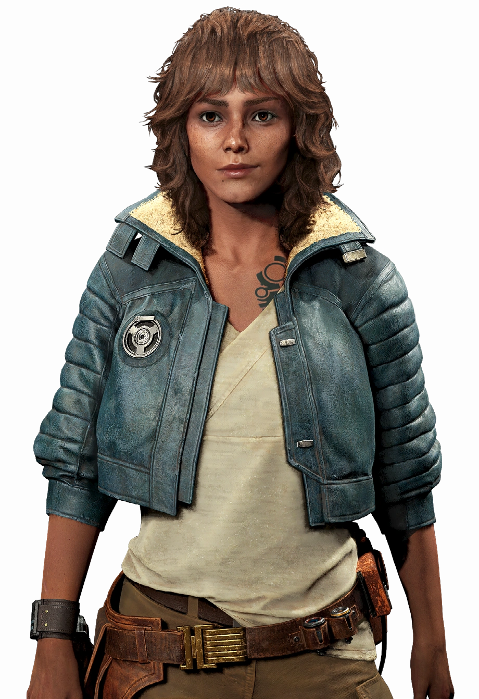
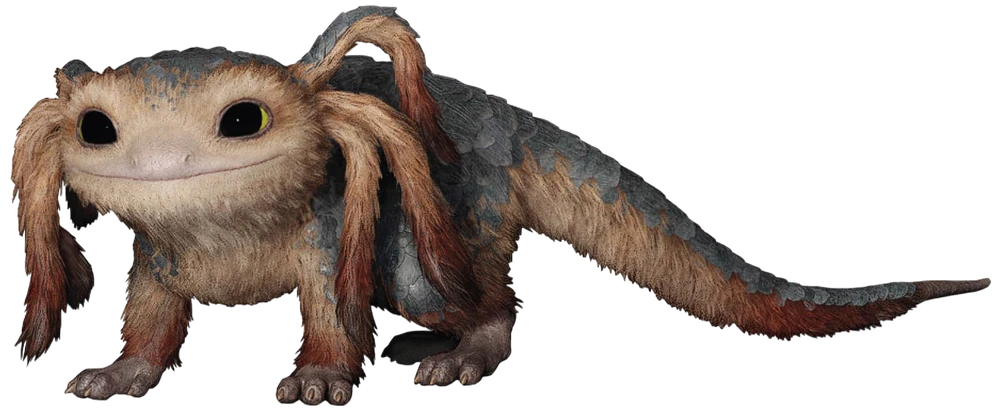
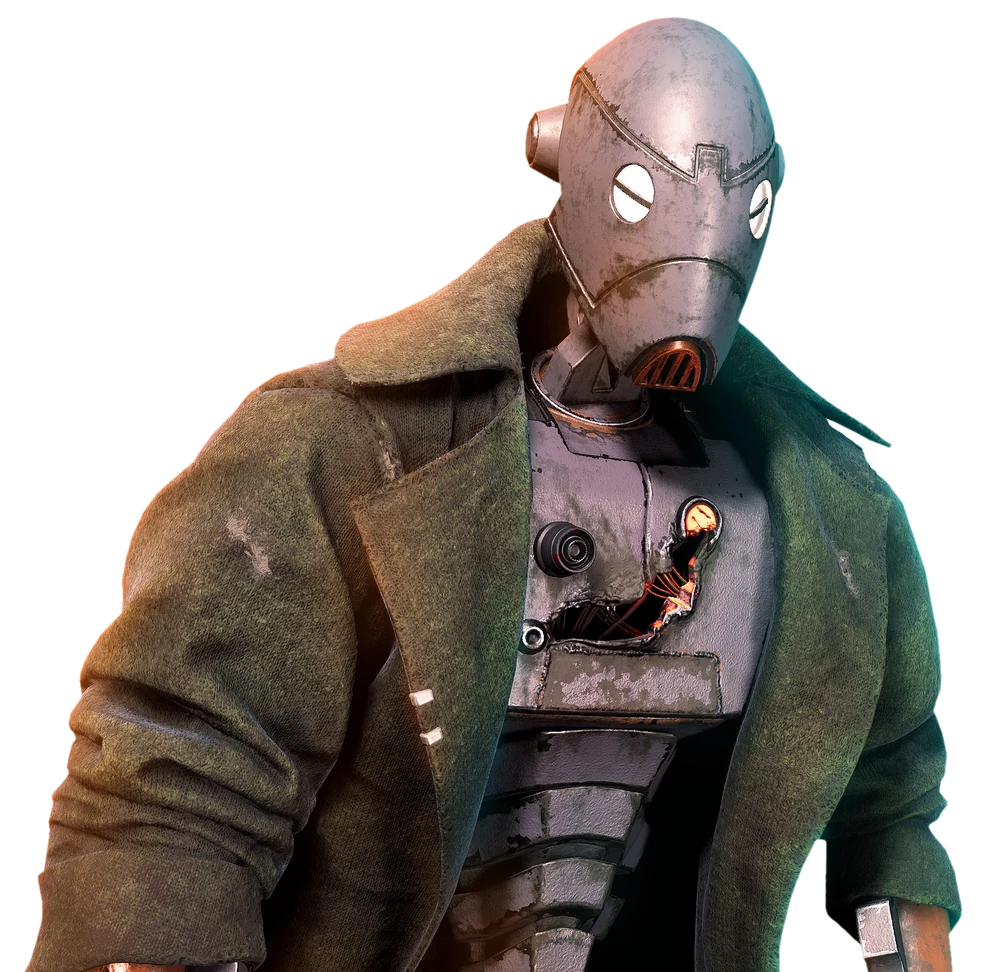
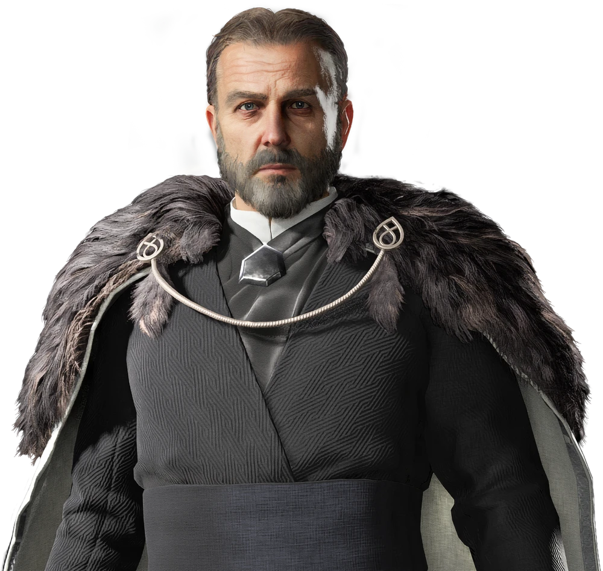
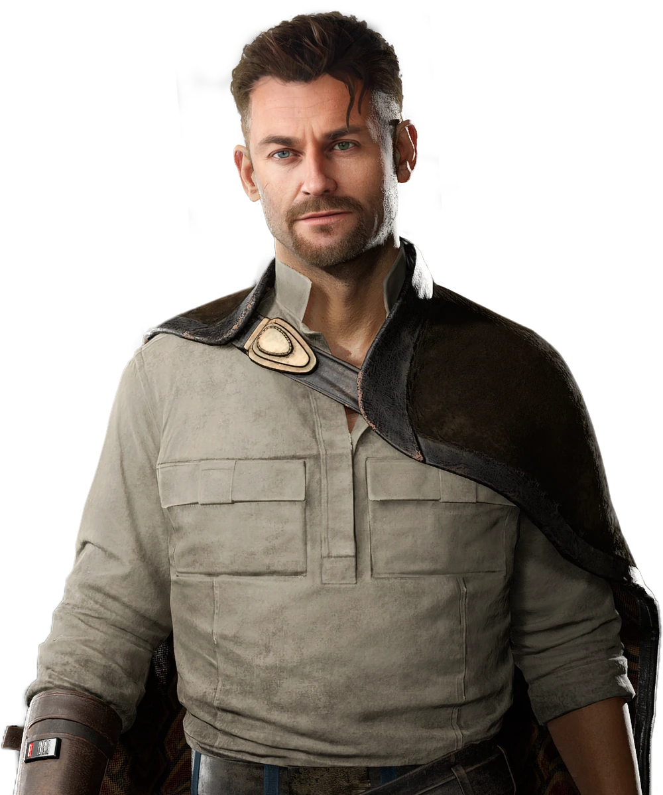
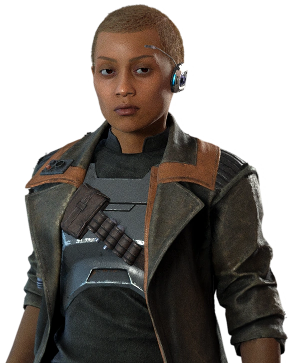

Kay Vess
Actriz: Humberly González
Una ladrona novata que busca dar el mayor golpe de la galaxia para comprar su libertad definitiva.

Conocé a los protagonistas, aliados y villanos del bajo mundo galáctico junto a los actores que les dieron vida.

Actriz: Humberly González
Una ladrona novata que busca dar el mayor golpe de la galaxia para comprar su libertad definitiva.

Voz: Dee Bradley Baker
Un merqaal leal e inteligente. Compañero inseparable de Kay, capaz de distraer enemigos y activar mecanismos.

Actor: Jay Rincon
Un droide comando de las Guerras Clon modificado, veterano de guerra y sicario personal.

Actor: Tamir Kapelian
Líder del temido sindicato criminal Zerek Besh, quien pone una enorme recompensa sobre la cabeza de Kay.

Actor: Eric Johnson
Un enigmático forajido y cerebro criminal que recluta a Kay para planear el golpe contra Sliro.

Actriz: Karen Knox
Una implacable y talentosa cazarrecompensas contratada por Sliro para rastrear a Kay Vess por toda la galaxia.